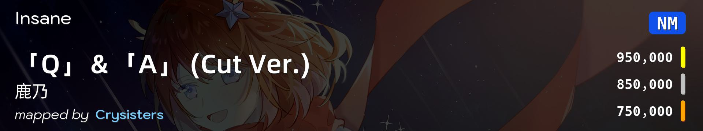
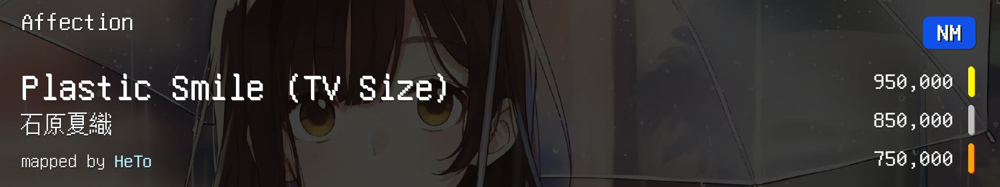
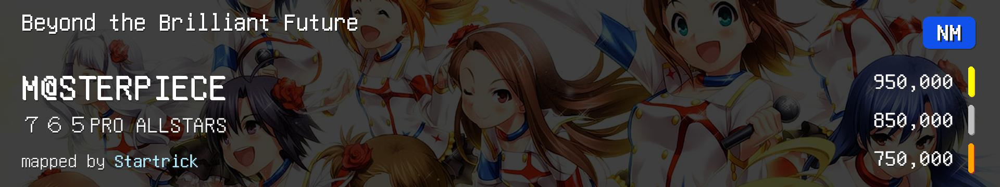
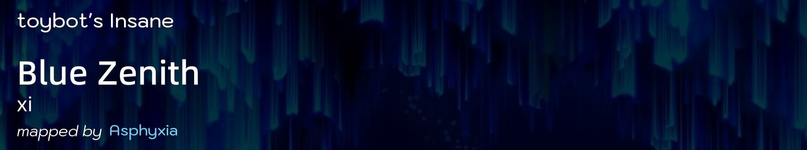
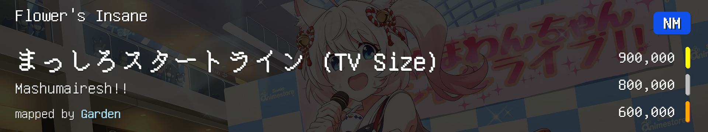
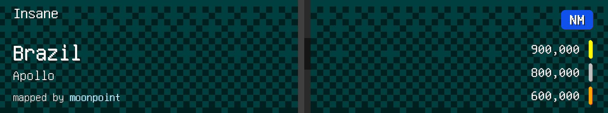
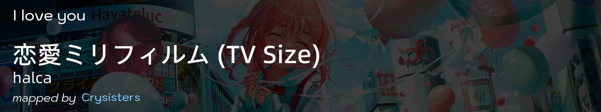
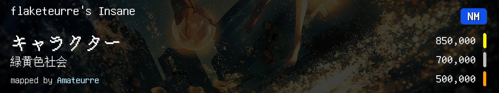

| # |
BID |
MODE |
SID |
Beatmap Info |
Star |
CS |
HP |
AR |
OD |
BPM |
LEN |
CIR |
SLD |
SPN |
NOTES |
| 1 |
3938363 |
osu |
1909442 |
 |
4.47 |
3.8 |
5.0 |
9.0 |
7.5 |
181.00 |
101 |
175 |
169 |
0 |
【综合】 |
| 2 |
2953158 |
osu |
1435128 |
 |
4.58 |
4.3 |
5.5 |
9.0 |
8.0 |
167.00 |
92 |
190 |
120 |
1 |
【综合】 |
| 3 |
962800 |
osu |
444335 |
 |
4.87 |
4.0 |
6.5 |
9.0 |
8.0 |
200.00 |
89 |
174 |
185 |
1 |
【跳】 |
| 4 |
580225 |
osu |
235477 |
 |
4.31 |
4.0 |
6.0 |
8.2 |
7.2 |
128.01 |
312 |
660 |
335 |
1 |
【低BPM爆发】 |
| 5 |
677872 |
osu |
292301 |
 |
4.31 |
4.0 |
6.0 |
9.0 |
7.0 |
200.00 |
233 |
309 |
502 |
2 |
【高BPM爆发】 |
| 6 |
3741717 |
osu |
1818779 |
 |
4.81 |
4.0 |
5.5 |
9.0 |
7.5 |
177.00 |
91 |
214 |
150 |
2 |
【综合串】 |
| 7 |
4419204 |
osu |
2104327 |
 |
4.87 |
3.0 |
4.0 |
9.0 |
8.0 |
223.00 |
37 |
99 |
68 |
0 |
【高BPM跳】 |
| 8 |
4213971 |
osu |
2023140 |
 |
4.49 |
4.0 |
4.5 |
9.0 |
8.0 |
128.00 |
86 |
121 |
190 |
1 |
【light alt/手控】 |
| 9 |
4221005 |
osu |
2025917 |
 |
4.30 |
3.8 |
5.0 |
9.0 |
8.0 |
124.00 |
230 |
441 |
388 |
8 |
【跳切/light alt/手控】 |
| 10 |
3819271 |
osu |
1803693 |
 |
4.74 |
4.0 |
4.0 |
8.0 |
8.0 |
150.00 |
88 |
361 |
107 |
1 |
【魔王曲】 |